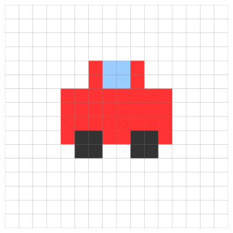
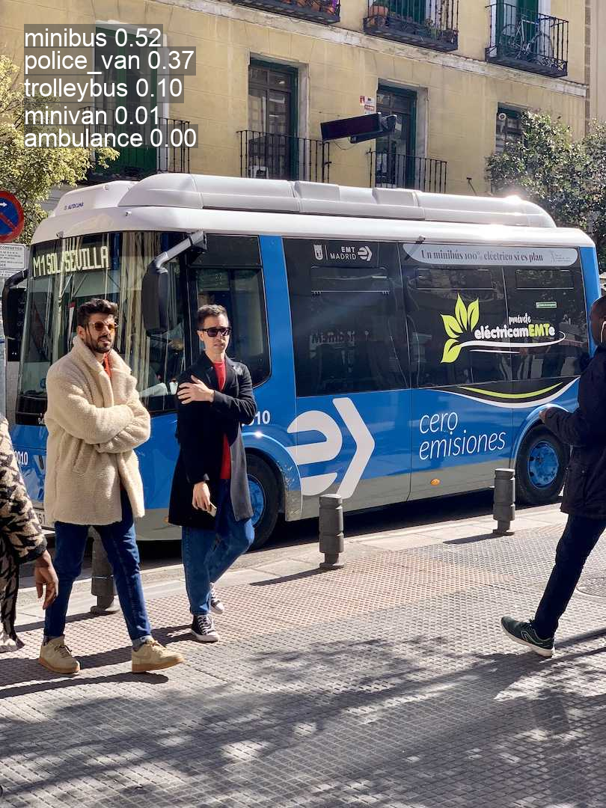
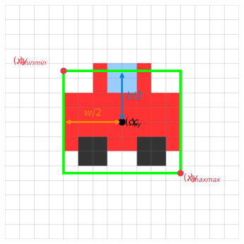
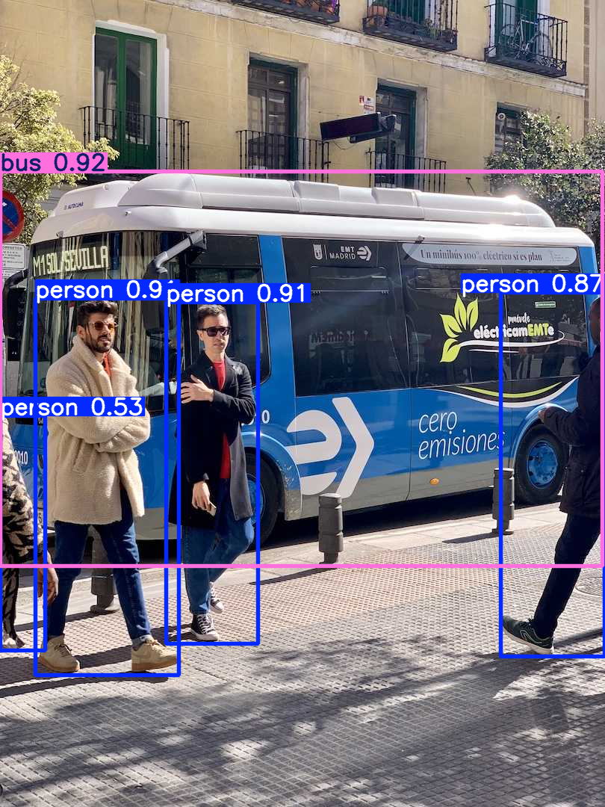
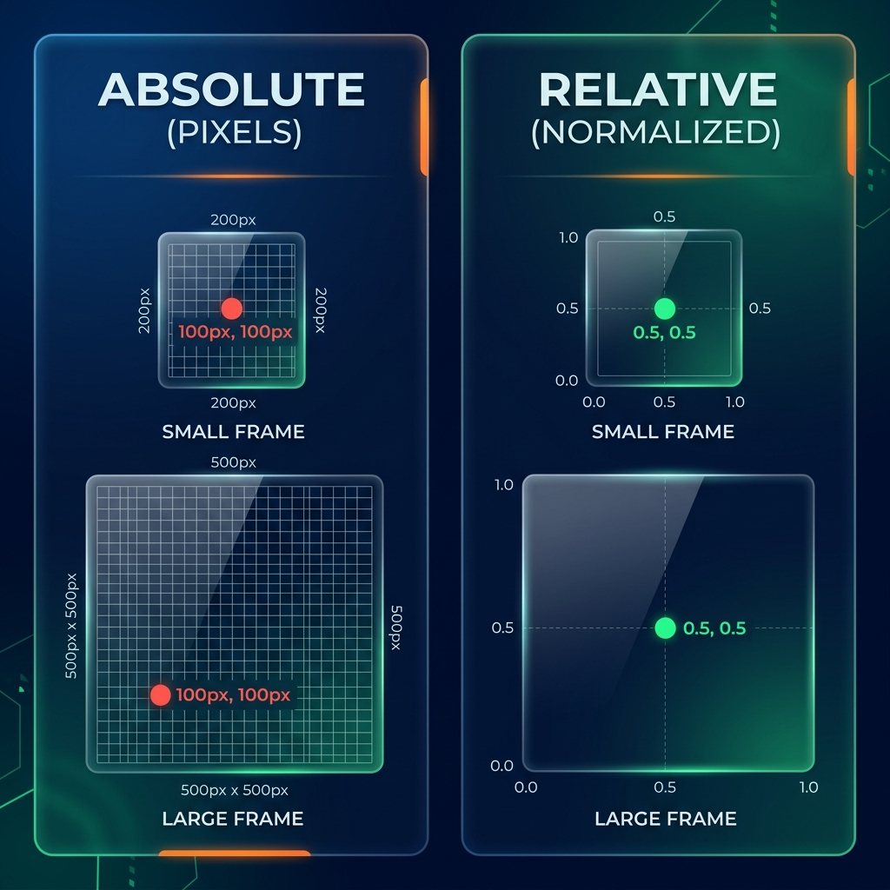
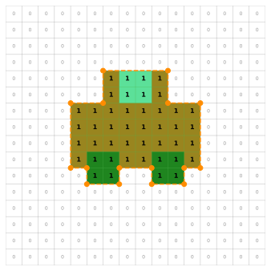
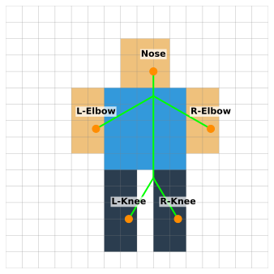
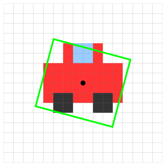
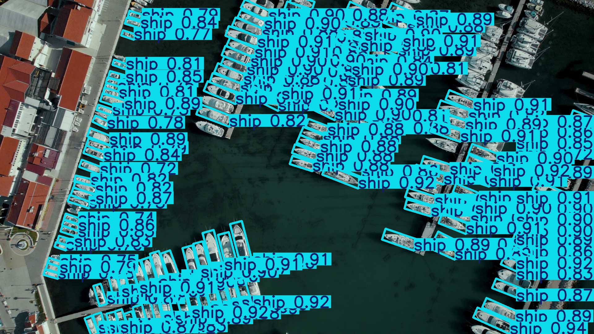

أساسيات Ultralytics YOLO: الجزء الأول
المهام والاستدلال (Tasks & Inference)
1. الخطوات الأولى: ماذا يمكن لـ YOLO أن يفعل؟
سنتعلم كيف نجعل الكمبيوتر “يرى” و “يفهم” ما حوله في ثوانٍ!
- هل يمكن للكمبيوتر أن يعرف الفرق بين القطة والكلب؟
- هل يمكنه تتبع حركة اللاعبين في الملعب؟
- الإجابة هي: نعم، وبسهولة مع YOLO!
كيف يتعلم الكمبيوتر؟ (تشبيه بسيط)
- البرمجة التقليدية (مثل وصفة الأكل):
- أنت تعطيه التعليمات خطوة بخطوة: “لو شفت ذيل طويل وأذنين مثلثتين، إذن هذا قط”.
- تعلم الآلة (مثل التذوق):
- أنت لا تعطيه قواعد، بل تعطيه 1000 صورة لقطط، وهو من كثرة ما “شاهد” يفهم بنفسه كيف يبدو القط!
🧠 تحدي سريع (30 ثانية): أي مهمة أحتاج؟
تخيل أنك تبني تطبيقاً لـ:
- فرز التمور: هل هذه التمرة ممتازة أم لا؟ -> (……)
- كاميرا مراقبة: ارسم مربعاً حول أي لص يدخل المحل -> (……)
- سيارة ذاتية القيادة: حدد شكل رصيف الشارع بدقة لنمشي بجانبه -> (……)
الإجابات: 1. تصنيف (Classify) | 2. اكتشاف (Detect) | 3. تجزئة (Segment)
كيف نكلم YOLO؟ (لغة الأوامر)
التعامل مع YOLO يشبه إعطاء أمر لمساعدك الشخصي. المعادلة بسيطة:
yolo ماذا تفعل؟ بأي وضع؟ الإعدادات
- المهمة (TASK): (اكتشف
detectالأشخاص، أو صنفclassifyالصورة). - الوضع (MODE): (توقع
predictالآن، أو تدربtrainمن جديد). - المتغيرات (ARGS): (استخدم هذا النموذج
modelأو هذه الصورةsource).
Tip
مسابقة سريعة: من يكتب أولاً في الشات أمر YOLO لاكتشاف الأشياء في صورة باسم test.jpg؟
موديلات جاهزة للعمل فوراً! (COCO)
تخيل أن YOLO قد ذهب للمدرسة مسبقاً وتعلّم 80 شيئاً مختلفاً! هذه المدرسة تسمى مجموعة بيانات COCO.
ماذا يعرف YOLO حالياً؟ - سيارات، أشخاص، كراسي، كلاب، طائرات، وحتى “مظلات المطر”!
لعبة فك الشفرة: ماذا يعني اسم yolo11n.pt؟ - yolo11: الإصدار الجديد والذكي. - n: (Nano) الصغير والسريع جداً (مناسب للجوالات). - .pt: امتداد ملف “عقل” النموذج (PyTorch).
2. استكشاف المهام (عملياً!)
لنجرب الآن كيف يرى النموذج الصور في وضع التوقع predict.
التصنيف (Image Classification)

يخرج النموذج قائمة بـ الاحتمالات (probs) لكل صنف ممكن:
| المعرف | الصنف | الاحتمال |
|---|---|---|
| 0 | سيارة (car) | 0.95 |
| 1 | حافلة (bus) | 0.03 |
| 2 | شخص | 0.01 |
| … | … | … |
من هو الفائز؟ (مفهوم الـ top1)
تخيل أن هناك سباقاً بين الأصناف داخل عقل YOLO:
- المتسابق الأول (سيارة): وصل بنسبة ثقة 95%.
- المتسابق الثاني (حافلة): تعثر ووصل بنسبة 3%.
- المتسابق الثالث (كلب): بعيد جداً بنسبة 2%.
إذن، من هو الـ top1؟ هو “السيارة” لأنها صاحبة أعلى نسبة.
Tip
مثال واقعي: لو سألت طفلاً “ما هذا؟” وقال لك: “أنا متأكد بنسبة كبيرة أنها قطة، وبنسبة بسيطة ربما تكون نمر”، فإن إجابته النهائية (قطة) هي الـ top1.
::::
تقوم مكتبة Ultralytics بتسهيل الأمر وتحسب النتيجة النهائية فوراً:
probs: قائمة الاحتمالات لجميع الأصناف.probs.top1→0: رقم (ID) الصنف الفائز (الأعلى احتمالاً).probs.top1conf→0.95: نسبة الثقة في هذه الإجابة (95%).
:::::
تعدد الأشياء (Multi-Label): مثل قائمة الناجحين! بدلاً من البحث عن “الأول على الفصل” فقط (top1)، نحن نبحث عن “كل الناجحين”. أي صنف يحصل على درجة أعلى من 50% نعتبره موجوداً في الصورة. مثال: لو كانت الصورة فيها “بيتزا” (90%) و”طاولة” (85%)، فكلاهما ناجح وموجود!
التصنيف عملياً بالكود
تحديد “ما هو الشيء الموجود في الصورة بشكل عام”.
yolo task=classify mode=predict model=yolo26n-cls.pt source="https://ultralytics.com/images/assets/bus.jpg"# كود بايثون
from ultralytics import YOLO
model = YOLO("yolo26n-cls.pt")
results = model.predict(source="https://ultralytics.com/images/assets/bus.jpg")
# الوصول للنتيجة
probs = results[0].probs
print(f"الصنف الفائز: {probs.top1}") # رقم الصنف
print(f"نسبة الثقة: {probs.top1conf}") # نسبة التأكد
print(f"كل الاحتمالات: {probs.data}") # مصفوفة جميع القيمالمرجع: التصنيف في المستندات
مثال: مخرجات التصنيف

1. الاكتشاف (Detection): “لعبة الصناديق”
تخيل أنك تعطي طفلاً مجموعة من الصناديق وتقول له: “ضع كل سيارة تراها داخل صندوق”. - ماذا يفعل YOLO؟ يرسم صندوقاً حول كل شيء يراه (سيارة، شخص، كلب). - مثال: كاميرا مراقبة في مواقف السيارات، ترسم صندوقاً أخضر حول كل سيارة موجودة.
2. التجزئة (Segmentation): “التلوين بدقة”
بدلاً من الصندوق، تخيل أنك تطلب من الطفل أن يلون السيارة نفسها فقط دون الخروج عن الخطوط. - الفائدة: نعرف شكل السيارة بالضبط، وليس فقط مكانها. - مثال: طبيب يستخدم الذكاء الاصطناعي لتحديد حجم “ورم” بدقة بيكسل ببيكسل لتجهيز الجراحة.
3. الهيكل (Pose): “الرجل العصا”
تخيل أننا نرسم خطوطاً بين مفاصل الإنسان (الركبة، المرفق، الرأس) كأننا نصنع “رجل عصا” (Stick Figure). - الفائدة: فهم كيف يتحرك الشخص. - مثال: تطبيق رياضي يخبرك إذا كانت وضعية “القرفصاء” (Squat) التي تقوم بها صحيحة أم لا.
4. المربعات المائلة (OBB): “الصناديق الذكية”
أحياناً تكون الأشياء مائلة (مثل سفينة في البحر). الصندوق العادي سيأخذ مساحة كبيرة فارغة. - الحل: نميل الصندوق ليكون على مقاس الشيء بالضبط. - مثال: تصوير الطائرات من الأعلى لمعرفة اتجاه السفن في الموانئ.
ما هي “الثقة” (Confidence)؟
- تحدي ذهني: لو قال لك الكمبيوتر “أنا متأكد بنسبة 90% أن هذه سيارة”، هل يعني هذا أنها سيارة حتماً؟
- الجواب الحقيقي: ليس دائماً!
- الثقة هي “يقين النموذج” الداخلي. أحياناً يكون النموذج واثقاً جداً ولكنه “مخطئ” (مثلاً يظن أن صورة سيارة لعبة هي سيارة حقيقية).
Warning
في المشاريع الحساسة (مثل الطب)، لا نكتفي بكلمة “أنا واثق”، بل نختبر النموذج بآلاف الصور لنعرف دقته الحقيقية.
الإحداثيات: من المركز للأطراف

كيف نحصل على أطراف المربع؟ إذا عرفنا نقطة المركز، نقوم بطرح نصف العرض للحصول على الطرف الأيسر، وجمع نصف العرض للطرف الأيمن:
\[ \begin{align*} x_{min} &= cx - \frac{w}{2} = 7.5 - 4.0 = 3.5 \\ y_{min} &= cy - \frac{h}{2} = 7.5 - 3.5 = 4.0 \\ x_{max} &= cx + \frac{w}{2} = 7.5 + 4.0 = 11.5 \\ y_{max} &= cy + \frac{h}{2} = 7.5 + 3.5 = 11.0 \end{align*} \]
أكثر من كائن في الصورة (N Objects)
من النادر أن تحتوي الصورة على كائن واحد فقط!
- يرى YOLO الصورة بالكامل ويستطيع اكتشاف عدة أشياء في نفس الوقت.
- إذا وجد 3 أشياء، سيقوم بإنشاء 3 مربعات، كل مربع يحتوي على
[cx, cy, w, h, conf, cls]. - يُسمى هذا المخرج مصفوفة أبعادها: \((N, 6)\) (حيث \(N\) هو عدد الكائنات).
اكتشاف الكائنات عملياً بالكود
إيجاد أماكن الأشياء (مربعات الإحاطة).
# جرب هذا الأمر!
yolo task=detect mode=predict model=yolo26n.pt source="https://ultralytics.com/images/assets/bus.jpg"# كود بايثون
import os
from ultralytics import YOLO
model_path = "yolo26n.pt"
if not os.path.exists(model_path):
model_path = "../yolo26n.pt"
model = YOLO(model_path)
results = model.predict(source="https://ultralytics.com/images/assets/bus.jpg")
# استخراج شكل البيانات
boxes = results[0].boxes
print(f"شكل المربعات: {boxes.shape}") # ستكون (N, 6)المرجع: الاكتشاف في المستندات
استخراج الإحداثيات بطرق مختلفة
كائن result.boxes يوفر لك الإحداثيات بعدة صيغ جاهزة للاستخدام:
.xyxy: الطرفيات الأربعة \([x_{min}, y_{min}, x_{max}, y_{max}]\)..xywh: المركز والأبعاد \([c_x, c_y, w, h]\)..xyxyn/.xywhn: القيم كنسبة مئوية (Normalized) بين 0.0 و 1.0.
مثال تطبيقي:
مثال: مخرجات الاكتشاف

مشكلة “اختلاف أحجام الصور”
تخيل لو قلت لك: “ارسم نقطة على بعد 5 سم من حافة الورقة”. - لو الورقة صغيرة (A5)، النقطة ستكون في المنتصف. - لو الورقة كبيرة (A3)، النقطة ستكون قريبة جداً من الحافة!
هذه مشكلة! الذكاء الاصطناعي سيحتار لو تغير حجم الصورة (مثل الفرق بين جودة 4K وصورة واتساب).

الحل السحري: “النسبة المئوية” (0 إلى 1)
بدلاً من “5 سم”، سنقول: “ضع النقطة في منتصف الورقة دائماً”. - في الورقة الصغيرة، المنتصف هو المنتصف. - في الورقة الكبيرة، المنتصف يبقى هو المنتصف! - بالمثل في YOLO: نقول له السيارة في النقطة 0.5 (يعني في نص الصورة بالضبط) مهما كان حجم الصورة عملاقاً أو صغيراً.
التجزئة (Instance Segmentation)

هنا لا نرسم مربعاً عادياً، بل نرسم شكل السيارة بدقة بيكسل ببيكسل!
- قناع البيكسل (Mask Tensor): جدول يحمل رقم
1إذا كان البيكسل يمثل السيارة، و0إذا كان يمثل الخلفية. - الإحداثيات: زوايا المضلع \((x, y)\) التي تشكل حدود السيارة بدقة.
conf: نسبة الثقة.cls: الصنف (سيارة).
التجزئة عملياً بالكود
استخراج الشكل الدقيق للأشياء في الصورة!
# جرب هذا الأمر وشاهد النتائج الملونة!
yolo task=segment mode=predict model=yolo26n-seg.pt source="https://ultralytics.com/images/assets/bus.jpg"# كود بايثون
from ultralytics import YOLO
model = YOLO("yolo26n-seg.pt")
results = model.predict(source="https://ultralytics.com/images/assets/bus.jpg")
# استخراج معلومات الأقنعة (Masks)
masks = results[0].masks
print(f"شكل الأقنعة: {masks.data.shape}") # (N, H, W)
print(masks.xy) # إحداثيات المضلعات الدقيقةالمرجع: التجزئة في المستندات
مثال: مخرجات التجزئة

الهيكل (Pose Estimation)

هنا نتعرف على “مفاصل” الجسم وتشكيله (مفيد جداً لتحليل الحركة والرياضة):
x, y: الإحداثيات لكل مفصل (مثل الأنف، المرفق، الركبة).kp_conf: نسبة التأكد من مكان هذا المفصل بالذات.conf: نسبة التأكد من وجود الشخص كاملاً.cls(0): دائماً الصنف 0 (شخص) في نماذج الهيكل.
الهيكل عملياً بالكود
استخراج وتتبع المفاصل البشرية.
yolo task=pose mode=predict model=yolo26n-pose.pt source="https://ultralytics.com/images/assets/bus.jpg"# كود بايثون
from ultralytics import YOLO
model = YOLO("yolo26n-pose.pt")
results = model.predict(source="https://ultralytics.com/images/assets/bus.jpg")
# استخراج نقاط المفاصل
keypoints = results[0].keypoints
print(f"شكل المفاصل: {keypoints.data.shape}") # (N, 17, 3) 17 مفصلاً لكل شخص
print(keypoints.xy) # إحداثيات المفاصلالمرجع: استخراج الهيكل في المستندات
مثال: مخرجات الهيكل

المربعات المائلة (OBB)

هذه مربعات إحاطة ولكن “مائلة”! مفيدة جداً في صور الأقمار الصناعية والطائرات بدون طيار (الدرون).
cx, cy: نقطة المركز.wوh: العرض والارتفاع.angle: زاوية الدوران.conf: نسبة الثقة.cls: رقم الصنف.
المربعات المائلة (OBB) عملياً
ممتازة للتعرف على السفن، السيارات من الأعلى، أو الأشياء المائلة.
from ultralytics import YOLO
model = YOLO("yolo26n-obb.pt")
results = model.predict(source="https://ultralytics.com/images/boats.jpg")
# استخراج المعلومات
obb = results[0].obb
print(f"شكل المربعات المائلة: {obb.data.shape}") # (N, 7)
print(obb.xywhr) # المركز، الأبعاد، وزاوية الدورانالمرجع: OBB في المستندات
مثال: مخرجات المربعات المائلة (OBB)

تتبع الكائنات (Tracking)
إعطاء (بطاقة هوية ID) خاصة لكل كائن وتتبعه عبر إطارات الفيديو (ممتاز لكاميرات المراقبة)!
from ultralytics import YOLO
model = YOLO("weights/yolo26n.pt")
# استخدم track() بدلاً من predict() للفيديو
results = model.track(source="path/to/video.mp4", stream=True)
# المرور على إطارات الفيديو
for result in results:
boxes = result.boxes
if boxes.id is not None:
# استخراج أرقام الهوية
ids = boxes.id.int().tolist()
print(f"أرقام التتبع: {ids}") # مثال: [1, 2]المرجع: التتبع في المستندات
عرض توضيحي: التتبع المستمر
طريقة التوقع الاحترافية: الدفعات (Batches)
كيف تعالج مئات الصور مرة واحدة وبسرعة؟
from ultralytics import YOLO
model = YOLO("weights/yolo26n.pt")
# الطريقة 1: تمرير قائمة من الصور
sources = [
"https://ultralytics.com/images/assets/bus.jpg",
"path/to/local/image.jpg",
"another_image.png"
]
results = model.predict(source=sources)
# الطريقة 2: تمرير مجلد كامل!
# results = model.predict(source="path/to/my_images_folder/")معالجة مخرجات الدفعات
# المرور على نتائج الصور
for result in results:
boxes = result.boxes # المربعات
probs = result.probs # الاحتمالات
result.show() # عرض النتيجة على الشاشة
result.save(filename=f"result_{result.path.name}") # الحفظمعالجة الفيديوهات الضخمة (Stream): استخدم stream=True لضمان عدم امتلاء الذاكرة أثناء معالجة فيديو طويل جداً:
🏁 مسابقة نهاية اليوم الأول
تحدي “الخبير الصغير”:
- ما هو اسم المهمة التي ترسم “نقاطاً” على مفاصل الإنسان؟
- أيهما أسرع: نموذج
yolo11nأمyolo11x؟ - هل يمكن لـ YOLO تتبع الأشخاص في فيديو؟
الإجابات: 1. الهيكل (Pose) | 2. يولو نانو (n) هو الأسرع | 3. نعم، باستخدام وضع التتبع (Track).
شكراً لاهتمامكم ووقتكم
يُسعدني الإجابة على استفساراتكم ومناقشاتكم